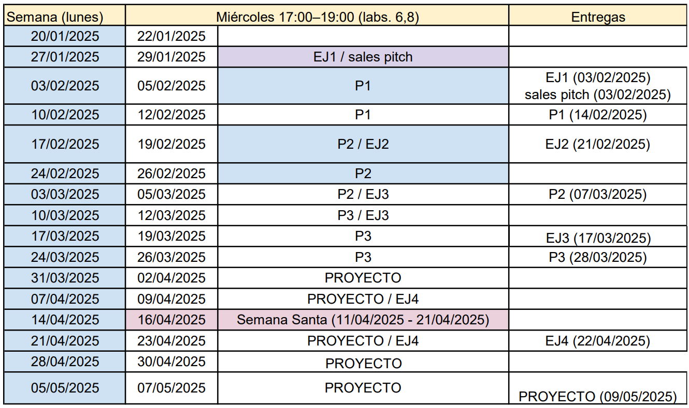
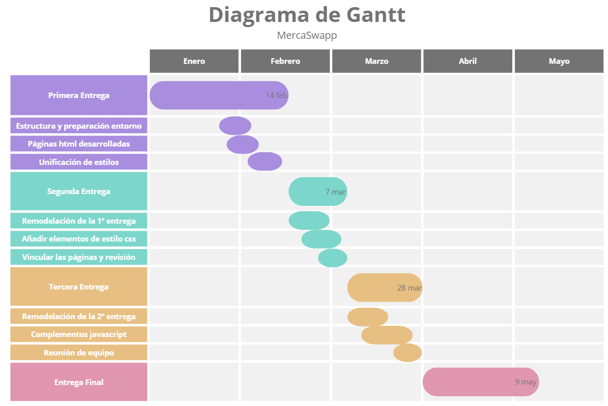

Planificación del proyecto
El trabajo en grupo requiere esfuerzo de todos los miembros del equipo. En las prácticas y en el proyecto final todos los miembros del equipo evalúan el trabajo hecho por sus compañeros. El profesor siempre puede evaluar de forma individual los conocimientos de cada miembro del equipo
Entregas a realizar
En la planificación interna del proyecto, se tuvo en cuentas las fechas de entrega propuestas por el profesor de la asignatura Humberto Javier. Se muestran a continuación todas ellas, incluidas las fechas de los ejercicios en pareja.
Herramientas utilizadas para la elaboración del proyecto
Se va a hacer uso de herramientas como GitHub Desktop para agilizar el desarrollo de las practicas y poder hacer un registro del control de cambios. Cada miembro del grupo se encargará de una página html para esta primera entrega. Además, realizamos reuniones por la plataforma Discord para facilitar la comunicación en el grupo. Intentamos realizar las entregas en equipo para que la carga de trabajo sea más ligera. A continuación, se detalla en una tabla las entregas a realizar. Estas determinarán el formato de trabajo.
Diagrama de Gantt
Se hace uso del siguiente diagrama de Gantt como herramienta de gestión de proyectos
En este caso, las entregas no se solapan porque primero terminamos una y empezamos la siguiente. La entrega 2 depende de la terminación de la entrega 1.
Tabla resumen de los hitos y sus fechas de terminación
| Hito | Fecha |
|---|---|
| Estructura y preparación entorno | 5 de febrero |
| Páginas html desarrolladas | 9 de febrero |
| Unificación de estilos | 12 de febrero |
| Primera entrega | 14 de febrero |
| Remodelación de la primera entrega | 19 de febrero |
| Añadir elementos de estilo css | 26 de febrero |
| Vincular todas las páginas y revisión | 5 de marzo |
| Segunda entrega | 7 de marzo |
| Remodelación de la segunda entrega | 12 de marzo |
| Complementos javascript | 19 de marzo |
| Reunión de equipo | 26 de marzo |
| Tercera entrega | 28 de marzo |
| Entrega final | 9 de mayo |
Es una planificación interna orientativa ya que aún no conocemos las dimensiones de las próximas entregas.